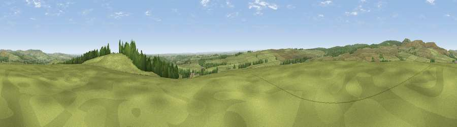

Viewpoint near Nunnykirk
#9688 in England · top 28% of its area beats it · near Nunnykirk · path 233 mWhere it is
The exact computed spot (NZ 05875 94575). Click the marker for map links.
Public access: the nearest public right of way is about 233 m away — the final stretch may cross private land. Computed from Natural England's CRoW access layer and OpenStreetMap rights of way — not the legal definitive map. Always verify locally.
The view, rendered

A 360° render of this exact spot computed from the terrain model, tree cover and land cover — summer colours, afternoon light, calibrated against photographs of famous viewpoints. Real trees, hedges and buildings will differ in detail.
The panorama
Grey silhouette: terrain skyline in each direction (720 bearings, Earth curvature and refraction included). Dashed green: skyline with trees (+15 m) and buildings (+8 m) as obstacles. Blue strip: how far the ground is visible on each bearing.
Where the view opens
Wedge length = distance to the farthest visible ground on that bearing (vegetation-aware). Rings at 10, 25 and 50 km.
What fills the view
84% grassland · 13% woodland · 2% cropland · 1% water
Angular shares of the visible panorama (visual magnitude), not map area. Landscape diversity 0.24 (0–1 Shannon).
Key numbers
More beautiful places nearby
The staircase of upgrades: each row has a higher view potential than everything closer. Driving times are estimates from straight-line distance, calibrated against real road routing — check an actual route before setting out.
| Place | Direction | Drive | Score |
|---|---|---|---|
| Viewpoint near Nunnykirk | E · 1 km | ~2 min | 66.0 |
| Viewpoint near Nunnykirk | SW · 3 km | ~8 min | 67.9 |
| Viewpoint near Rothbury | N · 4 km | ~9 min | 70.3 |
| Viewpoint near Rothbury | NNW · 4 km | ~10 min | 81.1 |
| Dove Crag | NNW · 5 km | ~10 min | 82.3 |
| Viewpoint near Glanton | N · 22 km | ~36 min | 82.9 |
| Viewpoint c12273_7856 | NW · 23 km | ~38 min | 83.7 |
| Viewpoint near Eglingham | N · 27 km | ~43 min | 83.8 |
55.24533, -1.90914 · source: screening · position refined by local search. Computed location — check access rights before visiting.